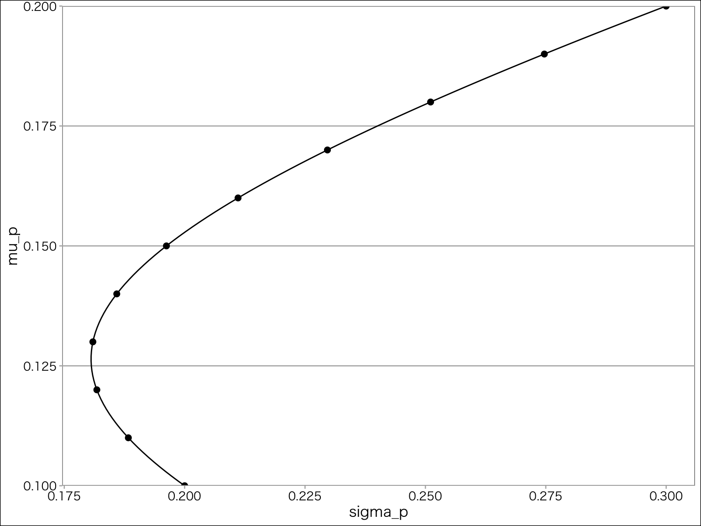

ファイナンス入門
第2章 ファイナンス入門
割引率
ファイナンスでは，ある財の今の価値と将来の価値は異なる，という考えをもっている。今の100万円と1年後の100万円の価値は異なるのである。 この現在の価値と未来の価値をつなぐ概念を割引率(discount rate)といい，将来キャッシュ・フローを現在価値(present value)に変換する際に用いる値である。 ファイナンス(finance)とは、この割引率がどのように決まるのかを明らかにする研究分野である。
確実なキャッシュ・フローに対する割引率
- 現在価値 ：一般に将来発生するキャッシュフローの現時点における価値
- 時間価値 ：将来と現在の価値の違い
- 無リスク金利 (risk-free rate) ：安全資産(無リスク資産)へと投資したときのリターンであり，安全資産への投資時点でリターンとして獲得できる額が確定する。無リスク金利は確率変数ではなく定数(parameter)である。
T年後の確実なキャッシュフローをCF_Tで表し，無リスク割引率をR_Fとすると，その現在価値は以下のように計算される。
PV = \frac{CF_T}{(1 + R_F)^T}
現時点でCF_0を1年間貯金する。利息rは0.1とする。 1年後に受け取れるキャッシュフローCF_1は、貯金した元本CF_0と利息CF_0 \times 0.1となる。つまり、CF_0 + CF_0 \times 0.1 = (1+0.1)CF_0である。
逆に、来年CF_1受け取るためには、今いくら貯金するかを考える。必要な貯金額をXとすると、X \times (1 + 0.1) = CF_1となる。つまりX = CF_1/ (1.1)となる。 これが現在価値である。
将来の確実なキャッシュ・フローCF_Tの現在価値は、割引率R_Fと将来受け取る時点であるTに依存している。CF_T = 100の場合、R_FとTの変化に応じて現在価値がどのように変化するのか確認する。
T=1として、横軸を割引率、縦軸を現在価値としたグラフが以下のものである。 割引率が大きくなるにつれて現在価値が小さくなることが分かる。
次に、R_F = 0.1として、横軸をT、縦軸を現在価値としてグラフが以下のものである。 キャッシュ・フローを受け取る時点が遠くなるほど、現在価値が小さくなることがわかる。
不確実なキャッシュ・フローに対する割引率
リスクプレミアム(risk premium)の反映が割引率の2つ目の役割である。 通常、将来キャッシュ・フローがいくらになるのか分からないのが普通であり、CFは様々な要因で変化する確率変数(random variable)であるため、現時点における期待値(expected value)で評価される。
ここで、期待値をとる演算子(operator)を\mathbb{E}で表し、期待値をとる時点を添え字で表す。ここでは現時点t=0における期待値を\mathbb{E}_0と表現している。 たとえば，現時点をt=0として，1期先に起こりうる結果Xが100か200であることが分かっていて，それぞれの発生確率が50%であったとする。この将来に起こりうる結果を現時点での情報を基に期待値をとる，ということは， \mathbb{E}[X] = 0.5 \times 100 + 0.5 \times 200 = 150 となる。このように起こりうる結果と発生確率を掛けて足したものを期待値という。
リスクプレミアムは割引率の調整で定量化される。
PV_0 = \frac{\mathbb{E_0}[CF_1]}{1+R_F+\underbrace{(\tilde{R}-R_F)}_{\text{リスクプレミアム}}}=\frac{\mathbb{E_0}[CF_1]}{\underbrace{1+\tilde{R}}_{\text{リスク調整済み割引率}}}
割引率は時間価値やリスクプレミアムに関する定量的な情報を含むので、タイミングやリスクの異なるキャッシュフローを現在価値という同一の尺度で評価できる。
NPV法
NPV法とは、割引現在価値(net present value: 以下NPV)を基準に投資の意思決定を行う考え方をいう。
投資を目論む現時点を時点0とする。 CF_0は時点0での投資を意味し、企業の財布から現金が減るためマイナスになる。
向こうT年間にわたり毎年\mathbb{E}[CF_t],\quad t = 1,\dots ,Tの期待キャッシュフローが生み出されるならば、それらを割引率1 + \tilde{R}で現在価値に直して足し合わせた値(つまりNPV)が、現時点で評価したプロジェクトの成果である。
NPVはそのプロジェクトから発生するすべてのキャッシュフローの現在価値として解釈できる。 コーポレートファイナンスでは，
- NPVがゼロ以上のプロジェクトは投資を実行
- NPVが負のプロジェクトは投資を見送る
ことを推奨する。
- 現時点(t=0)で280万円の初期投資が必要
- 1年後に 115万円の期待キャッシュフロー
- 2年後に 264.5万円の期待キャッシュフロー
- 無リスク金利 0.1，リスクプレミアム0.05とするときの割引率0.15
プロジェクトの成果を将来キャッシュフローの現在価値によって評価する。 2年分の将来キャッシュフローの現在価値を足し合わせて300万円
\text{プロジェクトAの成果} = \frac{115}{1.15}+\frac{264.5}{1.15^2}=300
よって、NPV = -280 + 300 = 20 >0
一般的なNPV法は以下のようにかかれる。 \begin{aligned} NPV_0 &= \frac{CF_0}{(1+\tilde{R})^0}+\frac{\mathbb{E}[CF_1]}{(1+\tilde{R})^1}+\frac{\mathbb{E}[CF_2]}{(1+\tilde{R})^2}+ \cdots +\frac{\mathbb{E}[CF_T]}{(1+\tilde{R})^T}\\ &= \underbrace{CF_0}_{\tiny 初期投資額}+ \underbrace{\sum_{t=1}^T\frac{\mathbb{E}[CF_t]}{(1+\tilde{R})^t}}_{\tiny 現時点で評価した成果} \end{aligned}
配当割引モデル
NPVの考え方を株式に適用する。株式から生み出される将来得られるキャッシュ・フローは、一株当たり配当(Dividend Per Share: DPS)であり、t時点の一株当たり配当をD_tで表す。 将来DPSは確率変数であるため期待値で考え、それを割引率\tilde{R}で割り引くことで、一株当たりの株式価値を求める。
\begin{aligned} P_0^* &= \frac{\mathbb{E_0}[D_1]}{1 + \tilde R} + \frac{\mathbb{E_0}[D_2]}{(1 + \tilde R)^2} + \cdots + \frac{\mathbb{E_0}[D_{\infty}]}{(1 + \tilde R)^{\infty}} \\ &= \sum^{\infty}_{t=1}\frac{\mathbb{E_0}[D_t]}{(1+\tilde{R})^t} \end{aligned}
ゴードン成長モデル
期待DPSが一定の割合で成長していくと仮定した割引配当モデルをゴードン成長モデルという。 直近の実現したDPSをD_0と置き、将来にわたってこの配当の期待値が一定割合G%で成長していくと仮定する。つまり1時点先の配当額が(1 + G)D_0となる、と仮定する。 すると、t時点先の配当額\mathbb{E}[D_t]は、 \begin{aligned} \mathbb{E}[D_t] &= D_0 \times \underbrace{(1+G) \times \cdots \times (1+G)}_{複利でt回}\\ &= (1+G)^tD_0 \end{aligned} で表すことができる。 一定割合で配当額が成長する株式の理論価値P_0を配当割引モデルで計算すると， \begin{aligned} P_0 &= \frac{(1+G) D_0}{(1+\tilde{R})} + \frac{(1+G)^2 D_0}{(1+\tilde{R})^3} + \frac{(1+G)^3 D_0}{(1+\tilde{R})^3} + \cdots \\ &= \sum^{\infty}_{t=1}\frac{(1+G)^tD_0}{(1+\tilde{R})^t} \\ &=\frac{(1+G)D_0}{\tilde{R}-G} \end{aligned} 2本目の式から3本目の式への計算で、等比級数の和の公式を利用している。
初項a，公比rの等比数列 a, ar, ar^2, ar^3, \dots , ar^{n-1},ar^n , \dots がある。この等比数列の和をS_nで表す。 S_n = a + ar + ar^2 + \cdots + ar^{n-1} + \cdots 両辺にrを乗じると， rS_n = ar + ar^2 + \cdots + ar^{n-1} + ar^{n} + \cdots となる。そして，S_n - rS_nを計算すると， \begin{aligned} S_n - r S_n &= a\\ (1-r)S_n &= a\\ S_n &= \frac{a}{1-r} \end{aligned} 上のゴードン成長モデルの初項は(1+G)D_0/(1+\tilde R)，公比は(1 +G)/(1+\tilde R)なので， \begin{aligned} S_n %P_0^* &= \frac{(1+G)D_0}{1+ \tilde R} + \frac{(1+G)^2 D_0}{(1+ \tilde R)^2} + \frac{(1+G)^3 D_0}{(1+ \tilde R)^3} + \cdots \\ &= \displaystyle \frac{\frac{(1+G)D_0}{(1 + \tilde R)}}{1 - \frac{1+G}{1+\tilde R}}\\ &= \displaystyle \frac{\frac{(1+G)}{(1 + \tilde R)}D_0}{\frac{(1+ \tilde R) - (1+G)}{1+\tilde R}}\\ %&= \displaystyle \frac{\frac{(1+G)}{(1 + \tilde R)}D_0}{\frac{\tilde R - G}{1+\tilde R}}\\ &= \displaystyle \frac{1+G}{\tilde R - G}D_0\\ \end{aligned} ただし，\tilde{R} \not = Gの場合のみである。
割引率と期待リターンの関係
割引率Rは投資家が将来キャッシュフローを購入するにあたって最低限要求する期待リターン(要求収益率)とも解釈できる。
1年後の期待DPSが100万円で配当支払後に即解散する予定(=DPSがゼロ)の企業の理論株価を考える。 たとえば，確率50%で配当が200となるが，確率50％で配当が0となる株式を考えてみる。期待配当は，0.5 \times 200 + 0.5 \times 0 = 100となる。
リスク調整済みの割引率r = 0.25であるときの現在価値は100/(1 + 0.25)で理論株価は80万円となる。 この株式を購入するか検討している投資家にとって、「現時点でこの株式を購入し、1年後に配当を受け取ることは一種の投資プロジェクト」とみなせる。 この投資プロジェクトに対して必要な投資額は現時点の株価P_0であり、現時点で評価した成果は配当として受け取り予定の将来キャッシュフローの現在価値P^*_0である。 よって、 NPV = -P_0 + P_0^* したがって、市場価値が理論株価以下である限り、NPVが非負となるためこの株式を購入することが経済合理的である。 NPV \geq 0 \Leftrightarrow P_0 \leq P^*_0 =80 つまり株式を80未満の価格で購入できれば、NPVがプラスとなる。
平均分散アプローチ入門
個々の投資家にとって最適となる証券の組み合わせの比率を決めることを最適ポートフォリオ選択という。 分散投資によりリスクを逓減できる、という現象がなぜ生じるのかを、数理的に明らかにする。 このアプローチを平均・分散アプローチといい、ポートフォリオの望ましさを、ポートフォリオのリターンの期待値と分散で評価する。
ポートフォリオのリスクとリターン
いま、銘柄Aと銘柄Bの2銘柄のみが投資対象である場合を考える。 それぞれの銘柄への投資割合をw_Aとw_Bとし、w_A + w_B = 1とする。
- 元本 X
- 投資銘柄Aのリターン 1 + R_A
- 投資銘柄Bのリターン 1 + R_B
元本Xのうちw_A分だけ銘柄Aに投資すると、1年後に期待値で\mathbb{E}[X \times w_A \times (1+R_A)]になる。銘柄Bについても同様に考えると、手元にある元本を全額銘柄AとBに振り分けると、 \begin{aligned} (1+R_A) w_A X + ( 1 + R_B) w_B X &= w_AX + w_AR_AX + w_BX + w_B R_B X\\ &= \left [\underbrace{(w_A+w_B)}_{\text{定義より} = 1}+(w_AR_A+w_BR_B) \right ]X\\&=(1+w_AR_A+w_BR_B)X \end{aligned} となる。元本を2銘柄に投資すると、1年後に(1+w_AR_A+w_BR_B)Xとなる。 1年後の価値と初期投資額の比としてこのポートフォリオのリターンR_Pを計算する。 \begin{aligned} \frac{\overbrace{(1+R_A)w_AX+(1+R_B)w_BX}^{将来時点の評価額}}{\underbrace{X}_{初期投資}} & = 1 + w_A R_A + w_B R_B \end{aligned} ここで、w_AR_A + w_B R_B = R_Pとおくと、 \text{ポートフォリオのリターン} = 1 + R_P となる。 元本を除いたポートフォリオのリターンR_Pは、構成銘柄のリターンを保有比率で加重平均した値となる。
リターンの定義(P_t - P_{t-1})/P_{t-1} = P_t/P_{t-1} -1はネット・リターン(net return)と呼ばれるものである。 これにたいして，元本も含めたリターン1 + R_t = P_t/P_{t-1}はグロス・リターン(gross return)という。
ポートフォリオ構築時には、各銘柄の実現リターンはわからないので(つまり確率変数)、かわりに期待値や分散を評価する。
銘柄Aと銘柄Bのネット・リターンの
- 期待値\mathbb{E}[R_A]と\mathbb{E}[R_B]をそれぞれ(\mu_A,\mu_B)
- 分散\mathbb{V}[R_A]と\mathbb{V}[R_B]をそれぞれ(\sigma^2_A,\sigma^2_B)
- 共分散\mathbb{Cov}[R_A, R_B]を\sigma_{AB}
で表す。
リターンR_AとR_Bの相関係数を\rhoと表記する。相関係数の定義から、 \begin{aligned} \rho %&= \frac{\mathbb{E}[(R_A - \bar R_A)(R_B - \bar R_B)]}{\mathbb{E}[(R_A - \bar R_A)^2]} &= \frac{\sigma _{AB}}{\sigma _A \sigma _B} \\ \Leftrightarrow \sigma_{AB} & = \rho\sigma_A\sigma_B \end{aligned} が成立する。
上の式より、R_P = w_A R_A + w_B R_Bであるから、その期待値\mathbb{E}[R_P] = \mu_Pも各銘柄の期待リターンの加重平均となる。ここで投資割合w_Aとw_Bはパラメータであり，R_A, R_Bは確率変数である。 \begin{aligned} \mathbb{E}[R_p] = \mu_P &= \mathbb{E}[w_A R_A + w_B R_B]\\ &= w_A \mathbb{E}[R_A] + w_B \mathbb{E}[R_B]\\ &=w_A\mu_A+w_B\mu_B \end{aligned}
ポートフォリオPの分散\mathbb{V}[R_P] = \sigma^2_Pは各銘柄の分散及び相関係数を用いて計算できる。
\begin{aligned} \mathbb{V}[R_P] = \sigma_P^2 &= \mathbb{V}[w_A R_A + w_B R_B]\\ &= w_A^2 \mathbb{V}[R_A] + w_b^2 \mathbb{V}[R_B] + 2 w_A w_B \mathbb{Cov}[R_A,R_B]\\ &= w_A^2 \sigma_A^2 + w_B^2 \sigma_B^2 + 2w_A w_B \sigma _{AB}\\ &= w^2_A \sigma^2_A + w^2_B \sigma^2_B + \underbrace{2 w_A w_B \rho \sigma_A \sigma_B}_{ここの\rho の符号が重要} \end{aligned}
ポートフォリオPの分散は，各銘柄の分散に投資割合の二乗を乗じたものに，各銘柄のリターンの相関関係部分を加えたものとなっている。 つまり，この2銘柄のリターンの相関係数\rhoに応じて，ポートフォリオPの分散が大きくなるかどうかが決まる，ということである。
分散投資のメリット
保有比率(w_A,w_B)を変化させたときのポートフォリオの\mu_Pと\sigma_Pがそのように変化するかを確認する。
\begin{aligned} \mathbb{V}[R_P] = \sigma_P^2 &= w^2_A \sigma^2_A + w^2_B \sigma^2_B + 2\rho{w_Aw_B\sigma_A\sigma_B}\\ &= (w_A \sigma_A + w_B \sigma_B)^2 - 2w_A w_B \sigma _A \sigma_B + 2\rho{w_Aw_B\sigma_A\sigma_B}\\ &= (w_A \sigma_A + w_B \sigma_B)^2 - (2 + 2\rho ) w_A w_B\sigma_A\sigma_B\\ &=(w_{A} \sigma_{A} + w_{B}\sigma_{B})^{2} - \underbrace{2(1-\rho )w_{A}w_{B} \sigma_{A}\sigma_{B}}_{ここ重要} \end{aligned} 0 \leq w_{A} \leq 1かつ 0 \leq w_{B} \leq 1のとき、 2 ( 1- \rho ) w_A w_b \sigma _A \sigma _B \geq 0 となる(\rho = 1のときのみ0となる)。 したがって、 \begin{aligned} \sigma_P^2 = (w_{A}\sigma_{A}+w_{B}\sigma_{B})^{2} - \underbrace{2(1-\rho )w_{A}w_{B} \sigma_{A}\sigma_{B}}_{\geq 0} \end{aligned} から、 \begin{aligned} & \sigma _P^2 \leq (w_A \sigma _A + w_B \sigma _B)^2 \\ \Longleftrightarrow & \sigma_{P} \leq \underbrace{w_{A}\sigma_{A}+w_{B}\sigma_{B}}_{リスクの加重平均} \end{aligned} となり，ポートフォリオのリスクを表す標準偏差\sigma_Pが銘柄AとBの標準偏差の加重平均w_{A}\sigma_{A} + w_{B} \sigma_{B}より少なくとも低くなることがわかる。 これを分散投資効果という。

完全な負の相関(\rho=-1)であるの場合、\sigma^{2}_{P}=0のポートフォリオを構築できる。 確認のため、2銘柄の価格が完全な負の相関\rho = -1をもつとき、ポートフォリオPのリスク\sigma_Pは \begin{aligned} \mathbb{V}[R_P] = \sigma ^2_P &=(w_{A}\sigma_{A}+w_{B}\sigma_{B})^{2}-2(1- (-1))w_{A}w_{B} \sigma_{A}\sigma_{B}\\ &= (w_{A}\sigma_{A}+w_{B}\sigma_{B})^{2} -4w_{A}w_{B} \sigma_{A}\sigma_{B}\\ &= w_A ^2 \sigma _A^2 + w_B^2\sigma _B^2 + 2w_A w_B \sigma_A \sigma_B -4w_{A}w_{B} \sigma_{A}\sigma_{B}\\ &= w_A ^2 \sigma _A^2 - 2w_{A}w_{B} \sigma_{A}\sigma_{B} + w_B^2\sigma _B^2 \\ &= (w_{A}\sigma_{A} - w_{B}\sigma_{B})^{2}\\ \sigma _P &= | w_{A}\sigma_{A} - w_{B}\sigma_{B}| \end{aligned}
以下のように，w_A \sigma _A = w_B \sigma_Bとなるようにw_Aとw_Bを選べば、\sigma _P = 0となるポートフォリオを作れる。
このケースでは、\sigma_A = 0.2、\sigma_B = 0.3となっているため、0.2w_A = 0.3w_Bとなる保有割合を考える。 \begin{aligned} 0.2 w_A &= 0.3w_B\\ 0.2 w_A &= 0.3(1-w_A)\\ 0.2 w_A &= 0.3 - 0.3w_A\\ 0.5 w_A &= 0.3\\ w_A &= 0.6 \end{aligned} となるため、銘柄Aに60％、銘柄Bに40%を投資することで、リスクゼロで期待リターン0.6\times0.1 + 0.4 \times 0.2 = 0.14を獲得することができる。
空売りの効果
空売り(short sale)とは、 1. 保有していない証券を誰か(普通は証券会社)から借りてきて売却し、 2. 一定期間後に買い戻して元の持ち主に返却する 取引をいい、値下がりから利益を得る。 空売りを行う投資家をショートセラー(short seller)という。
いままでは、0 \leq w_A,w_B \geq 1＄という制約を置いていたが、この制約をはずして、 w_A + w_B = 1のみを課す。つまりw_A<0やw_B<0が空売りを表す。
安全資産の導入
安全資産の購入についても考える。
安全資産FのリターンをR_F、 ポートフォリオPの保有比率をw_Fとおく（安全資産のリターンは確実に実現する成果なので，確率変数を表すチルダをつけてない）。 以降は，確率変数にはなるべくチルダをつける。銘柄Aと銘柄Bと安全資産の投資割合をそれぞれw_A, w_B, w_Fで表す。
まず銘柄Aと安全資産の2資産からなるポートフォリオを考える。 つまり各資産への投資割合をw_A + w_F = 1,\quad w_B = 0 とする場合を考える。 この安全資産と銘柄AからなるポートフォリオPの(ネット)リターン\tilde R_Pは， \tilde R_{P} = w_{F} R_{F} + w_{A} \tilde R_{A} となり，このポートフォリオの期待値は， \begin{aligned} \mu_{P} =\mathbb{E}[R_P] &=\mathbb{E}[ w_F R_{F} + w_{A} \tilde{R_A} ]\\ &=w_F R_{F}+w_{A} \mathbb{E}[\tilde{R_A}]\\ &=w_F R_{F}+w_{A} \mu_{A}\\ &=(1-w_A) R_{F}+w_{A} \mu_{A}\\ &=R_{F} - w_{A}R_F + w_A\mu_A\\ &=R_{F} + w_A(\underbrace{\mu_A - R_F}_{\tiny リスクプレミアム}) \end{aligned}
となる。もちろん安全資産のリターンは確率変数でないので，期待値をとってもそのままである。 \mu_{A}-R_{F} はリスク資産である銘柄Aのリスクプレミアムを表している。通常，リスクのある資産の期待リターンは安全資産のリターンより大きいため，リスクプレミアムは正の値となる。したがって，リスク資産への投資割合w_Aを1単位増加させれば，\mathbb{E}[R_P]はリスクプレミアム分増加する
つぎに，ポートフォリオのリスクを表す標準偏差\sigma _Pとリターンの関係は次式で表せる。まず安全資産のリスクはゼロであるため，リスク資産の銘柄Ａを保有する分だけリスクが生じる。
つぎに，ポートフォリオのリスクを表す標準偏差\sigma _Pとリターンの関係は次式で表せる。まず安全資産のリスクはゼロであるため，リスク資産の銘柄Ａを保有する分だけリスクが生じる。
\begin{aligned} \sigma_P^2 = \mathbb{V}[R_P] &= \mathbb{V}[w_FR_F + w_A R_A]\\ &= \mathbb{V}[w_A R_A]\\ &= w_A^2 \mathbb{V}[R_A]\\ &= w_A^2 \sigma _A^2 \\ \sigma _P & = |w_A| \sigma_A \end{aligned}
空売りを想定する場合w_A < 0となるため，標準偏差を求める際に絶対値をとっている。空売りはない状況（つまり，w_A>0）を想定すると，
\begin{aligned} \sigma _P = w_A \sigma _A\\ w_A = \frac{\sigma_P}{\sigma _A} \end{aligned}
のように，リスク資産である銘柄Aへの投資割合w_Aが，ポートフォリオPとリスク資産Aのリスクの割合で決定されることがわかる。これを，ポートフォリオの期待リターン\mu_Pに代入すると，
\begin{aligned} \mu_{P} &= R_F + w_A(\mu_A - R_F)\\ & = R_F + \frac{\sigma_P}{\sigma _A}(\mu_A - R_F) \\ &= R_{F}+\frac{\mu_{A}-R_{F}}{\sigma_{A}}\sigma_{P} \end{aligned}
となり，期待リターン\mu_Pは，切片がR_F，傾きが(\mu_A - R_F)/\sigma_Aとする\sigma_Pの線形関数となる。
3資産のポートフォリオ
リスク資産AとB，安全資産Fの3資産に投資するポートフォリオを考える。 ここで，w_A + w_B > 0を仮定し，少なくとも少しはリスク資産を保有するケースを考える。 当然だけれど，w_A = w_B =0のケースでは，安全資産のみを保有するケースとなり，リスクも無く，リターンも確定している。
3資産A,B,Fへの投資割合をそれぞれw_A，w_B,w_Fとすると， 3資産からなるポートフォリオの期待リターンは次のように計算できる。 \begin{aligned} \mathbb{E}[R_{P}] &= w_FR_F + w_A \mathbb{E} [\tilde R_A] + w_B \mathbb{E}[ \tilde R_B] \\ & = w_{F} R_{F} + (w_{A} + w_{B}) \left(\frac{w_{A}}{w_{A}+w_{B}} \mathbb{E} [\tilde R_{A}] + \frac{w_{B}}{w_{A}+w_{B}} \mathbb{E}[ \tilde R_{B} ]\right) \end{aligned} 安全資産への投資割合w_Fとリスク資産への投資割合w_C = w_A + w_Bとまとめて，式を変形させる。 安全資産への投資以外の資金で構築したリスク資産AとBからなるポートフォリオをP_Cを考えると，P_Cの期待リターンR_Cは次のように計算できる。 \begin{aligned} R_{C} &= \frac{w_{A}}{w_{A}+w_{B}} \mathbb{E}[\tilde R_{A}] + \frac{w_{B}}{w_{A}+w_{B}}\mathbb{E}[ \tilde R_{B}]\\ \end{aligned}
安全資産FとポートフォリオCを保有した場合の期待リターンは次式となる。
\begin{aligned} \mu_{P} & = \mathbb{E}[w_F R_F + w_A R_A + w_B R_B]\\ &= w_FR_F + w_A \mathbb{E}[R_A] + w_B \mathbb{E}[R_B]\\ &= w_FR_F + (w_A + w_B) \underbrace{ \left( \frac{w_A}{w_A + w_B} \mathbb{E}[R_A] + \frac{w_B}{w_A + w_B} \mathbb{E}[R_B] \right )}_{=w_C\text{とおく}}\\ &= w_F R_F + w_{C}\mu_C \end{aligned}
安全資産と2つのリスク資産からなるポートフォリオの期待リターンは，安全資産の期待リターンとリスク資産の期待リターンの和となる。
安全資産と2つのリスク資産に投資可能な場合，(\mu_P, \sigma _P)の取りうる値を図示できる。テキストの数値例を用いてRで図示してみる。
- リスク資産Aの期待リターン 0.1，標準偏差 0.2
- リスク資産Bの期待リターン 0.2，標準偏差 0.3
- 安全資産の期待リターンを 0.01
- リスク資産AとBの間の相関係数は0.2
- 安全資産，銘柄A，銘柄Bへの投資割合を0.2，0.3，0.5とするポートフォリオを考える。このポートフォリオの期待リターン\mu_Pと標準偏差\sigma_Pは次のようになる。
最適ポートフォリオ問題
「どのようなポートフォリオが投資家にとって望ましいか」
一般に、投資家はリスクが小さい一方でリターンが大きいポートフォリオを好む。 ここでは，リターンをポートフォリオの期待リターン\mu_P，リスクをポートフォリオの標準偏差\sigma _Pで表し，この2つの変数から更正される平面(\mu_P, \sigma_P)上で最適ポートフォリオ問題を分析する。
効率的フロンティア
リスク資産Aと資産Bにのみ投資可能であり，それぞれに異なる割合で投資したポートフォリオDとＥを比較する(以下の図）
- 標準偏差はともに0.25 \sigma _D = \sigma _E = 0.25
- Dの方がEよりも期待リターンが大きい，\mu _D > \mu _E
つまり，同じリスク（標準偏差）ならリターン（期待リターン）が高いポートフォリオに投資したほうがよい。よってリスク・リターンのトレードオフの意味でDの方がEよりも望ましい。 以下のグラフでいうと、同じリスク(緑のライン上)なら、リターンの高いポートフォリオが望ましい。そのため赤い実線が効率的フロンティアとなり、青い点線は選択されないポートフォリオになる。
リスク資産AとBに加え、安全資産Fにも投資可能な場合、効率的フロンティアは直線になる。 この場合、効率的フロンティアは資本市場線(Capital Market Line; CML)とも呼ばれる。 傾きは、この金融市場におけるリスクとリターンのトレードオフを表す。
投資家のリスク回避度と最適ポートフォリオ
効率的フロンティアのうち、どの点が投資家の最適ポートフォリオになるのか，について考える。 そのためには投資家のリスク・リターンのトレードオフに関する選好(preference)の特徴，つまりリスクの回避度の情報が必要となる。 (\mu_P,\rho_p)平面上でそれを描く方法の一つが無差別曲線(indifference curve)である。 無差別曲線とは，投資家の効用(utility)が一定となるリスクとリターンの組み合わせを描いた曲線をいう。つまり同じ効用水準を達成できるリスクとリターンの組み合わせを表現した曲線である。
効用関数の例
以下では，財xとyを消費したときの効用Uを図示している。この消費者の効用関数はU(x,y) = x^{\frac 25} \times y^{\frac 35}としている。
この立体図を等高線を使って表現したものが以下の図である。 青いラインは予算制約であり、予算の範囲内で購入可能な財の組み合わせを意味している。つまり、この予算制約と無差別曲線が接する点が、予算内で達成可能な最も高い効用水準を表している。
無リスク利子率が10%で，リスクプレミアムが5％，βが1.2の場合の期待リターンは，R_F + \beta \times (R_M - R_F) = 0.1 + 1.2 \times 0.05 = 0.16となる。このときの無差別曲線は，U = 0.16となるような点を結んだ曲線となる。
リスクとリターンの無差別曲線

複数ポートフォリオを比べるとき，この図の左上のものほど高リターン低リスクに対応するので、より高い効用水準が実現する。 また無差別曲線の局所的な傾きは、その投資家が追加的なリスクを引き受けるうえで要求するリスクプレミアムを表す。 リスク回避的な投資家ほど，リスクを1単位負担する際に，より大きなリスクプレミアムを要求するので、傾きは大きくなる。 つまり，1単位リスクを負担する代わりに欲しいリターンの額が大きくなるほど，傾きが大きくなる。
無差別曲線と効率的フロンティアが接する点が、この投資家にとっての最適ポートフォリオとなる。 投資可能なポートフォリオの範囲で、最も左上の無差別曲線を実現するのが接点となる。 どの点が最適ポートフォリオとして選ばれるかは個々の投資家の無差別曲線の形状(リスク回避度)に依存する。最適ポートフォリオにおいて、無差別曲線と効率的フロンティアの局所的な傾きは一致(接線だから当然)するため、その投資家が要求するリスクプレミアムがちょうど実現されている。
上図の場合，この投資家の最適ポートフォリオは(w_F,w_{tan})\approx(0.29,0.71)の比率で構成される。
接点ポートフォリオは銘柄Aに47％、銘柄Bに53％投資するポートフォリオだったので、最適保有比率は、(w_F,w_A,w_B)\approx(0.29,0.33,0.38)と書き換えられる。
トービンの分離定理
安全資産が投資可能な場合の最適ポートフォリオ問題を考える。
- 接点ポートフォリオを求め、リスク資産同士の相対的な保有比率を求める。
- 投資家ごとのリスク回避度に応じて安全資産と接点ポートフォリオの最適保有比率の決定
1は各投資家で共通している。 いったん接点ポートフォリオを求めてしまえば、他の投資家はその情報を用いて2を考えればよい。
最適ポートフォリオ問題を2段階に分離できるという命題は、トービンの分離定理(又は二基金文理定理)と呼ばれている。
CAPM
ここでは，資産価格モデルの1つである資本資産価格モデル(Capital Asset Pricing Model)について議論する。まずは各投資家の最適ポートフォリオ問題を所与として、金融市場全体の均衡に関して議論する。
仮定の確認
- 選好 : 全ての投資家はポートフォリオを期待値と標準偏差の基準で評価する
- 取引コスト : 取引に際して手数料や税金が存在せず、空売りが自由に可能
- 流動性 : どれだけ売買しても証券の価格は変化しない
- 情報集合 : 全ての投資家は同じ情報を共有している
上記の仮定を満たす金融市場のことを、一般に完全資本市場(完全市場: perfect market)と呼ぶ。 これは「取引を行う上で完全に摩擦のない市場」というものであり，理論上の設定である。
厳密にいうと、上記の仮定のうちいずれも現実には成立しない。 しかし、単純で分析が容易なモデルから出発し、その含意が仮定にどう依存するか議論を深めていくというのが経済理論の標準的なアプローチである。 実際、以降で導出するCAPMに関してこれらの仮定を緩めた理論が数多く提唱されている。
CAPMの第一命題
以上の仮定を受け入れると安全資産が投資可能なとき，全ての投資家の最適ポートフォリオ問題に対してトービンの分離定理を応用することができる。 全ての投資家は安全資産と接点ポートフォリオに投資し、危険資産に限定すれば同質的なポートフォリオを保有する。 金融市場全体の均衡を議論するうえで、市場にその資産が供給されている以上、誰かがその最適ポートフォリオの一部として保有しているという、需要と供給の一致がポイントである。
- 市場に参加している投資家3名
- 市場に供給されている危険資産が銘柄XとYだけ
- 時価総額はXが800億円、Yが200億円
この市場には合計1000億円の危険資産が存在するとする。 全ての投資家が保有するリスク資産の合計額も1000億円に一致するはず。 リスク資産に限定すれば，全ての(合理的な)投資家は接点ポートフォリオと同じ比率でリスク資産を保有しているので，銘柄XとYの保有比率は時価総額と同じ比率8:2になっていなければならない。
| 銘柄X | 銘柄Y | 合計 | |
|---|---|---|---|
| w_X=0.8 | w_Y=0.2 | w_X+w_Y=1 | |
| 投資家A | 480 | 120 | 600 |
| 投資家B | 240 | 60 | 300 |
| 投資家C | 80 | 20 | 100 |
| 合計 | 800 | 200 | 1000 |
以上の議論をよりフォーマルに述べるために、市場ポートフォリオを導入する。
市場ポートフォリオ (market portfolio)とは，市場に存在する全ての危険資産を時価総額比率で保有したポートフォリオをいう。厳密には，リスク資産には株式や債券に代表される金融資産の他、不動産や貴金属などの実物資産も含まれるが、実用上はTOPIXやS&P500といった株価指数と同一視されることが多い。
市場ポートフォリオは接点ポートフォリオと一致し、効率的フロンティア(資本市場線)上に位置する。
投資家は市場ポートフォリオに投資するとき、\sigma_Mのリスクを背負う見返りとしてR_Fに加えて\mu_M-R_Fだけ追加的な報酬を期待する。 この追加的な報酬を市場リスクプレミアム(market risk premium)という。したがってこの命題の下では、資本市場線を市場リスクプレミアム(\mu_M-R_F)を利用して、以下のように表せる。
\mu_P = R_F + \frac{\mu_M - R_F}{\sigma_M} \sigma_P

今までのパラメータをそのまま用いる。 接点ポートフォリオの保有比率は概ね47%を銘柄Aに、 53%を銘柄Bに投資するポートフォリオになった。CAPMの第一命題によると、この市場における銘柄AとBの時価総額比率は約0.47対0.53になっていなければならない。 この命題によると、各銘柄の期待リターンや分散から接点ポートフォリオを計算する必要はなく、単に時価総額加重で市場ポートフォリオを保有すればよい。
- パッシブ運用：幅広い銘柄に分散投資し、市場平均と同じようなパフォーマンスを目指す運用手法
- アクティブ運用：市場平均を上回るパフォーマンスを目指し、投資銘柄を絞ったり、投資比率を工夫したりする運用方法
任意のポートフォリオの収益性を測る指標として、シャープ・レシオが提唱されている。シャープ・レシオは追加的なリスク・テイクによってどれだけリスクプレミアムを改善できるのかを表す指標。CAPMの第一命題によると、市場ポートフォリオはシャープ・レシオを最大化するという意味で最も効率的なポートフォリオであり、資本市場線の傾き\frac{\mu_M - R_P}{\sigma_M}は市場ポートフォリオのシャープ・レシオと一致する。
\frac{\mu_P-R_F}{\sigma_P}
CAPMの第二命題
第二命題は個々の資産のリスクとリターンのトレードオフを数式で表現したもの。 ある証券に投資するときのリスクと、その証券に投資するときの期待リターンとの関係を知ることができるようになる。各投資家が証券iを追加的に保有する際、重要となるのは市場ポートフォリオとの相関。分散が大きい資産であっても、市場ポートフォリオと負に相関していれば、その資産を追加的に保有することでポートフォリオ全体のリスクは低減される。CAPMの第二命題は、この相関を以下のマーケット・ベータとして定量化する。 ※R_iは証券iのリターン、R_Mは市場ポートフォリオのリターン
この\beta_iは市場ポートフォリオのリスクを1としてベンチマーク化し、その証券のリスクがベンチマークの1を上回るか下回るかを測るもの。\beta_iが大きいほど証券iは投資家にとってリスクが大きいことを意味する。証券iのリスクはその証券のリターンの標準偏差ではなく、この\beta_iによって測られる。 \beta_i = \frac{\mathbb{Cov}[R_i, R_M]}{\mathbb{Var}[R_M]}
金融市場全体が均衡しているには，リスクの高い証券はその分だけ期待リターンも高くなければならない。 \beta_iが低いにもかかわらず期待リターンが高い証券があるなら、投資家は市場ポートフォリオから離れてその証券をさらに買い増しするインセンティブを持つ。 その結果、市場価格が上がり、期待リターンが下がるため、\beta_iに応じた期待リターンが均衡で実現される。 CAPMの第二命題はこの均衡におけるリスクとリターンのトレードオフの関係を記述した式である。
これまでは市場リスクプレミアムを\mu_M - R_Fと表記していたが、以後ではより一般的な\mathbb{E}[R_M] - R_Fと表記する。
各証券のリスクプレミアムは、その証券のマーケット・ベータに比例する。 この式は、証券iのリスクプレミアム\mathbb{E}[R_i]-R_Fを、\beta_iと市場リスクプレミアム\mathbb{E}[R_M]-R_Fに分解している。
第二項の\mathbb{E}[R_M]-R_Fは個々の証券には依存しない定数である。
\begin{aligned} \mathbb{E}[R_i]-R_F = \beta_i (\mathbb{E}[R_M] - R_F)\\ \text{ただし、 } \beta = \frac{Cov[R_i,R_M]}{Var[R_M]} \end{aligned}
通常、市場リスクプレミアムは正の値をとるので、CAPMの第二命題によると、個々の証券のリスクプレミアムは\beta_iに関して線形に増加する。 \beta_iはあくまで市場ポートフォリオとの相関でリスクを定量化しているのがポイント。 いくら個々の証券のリスクが大きくても、それが市場ポートフォリオと相関しない固有リスクであれば、リスクプレミアムには反映されない。 期待値をとる前のR_iを分解して確認する。
R_i = R_F + \beta_i (R_M - R_F) + \varepsilon_i
ここで\varepsilon_iは期待値ゼロでR_Mと相関しない誤差項である。
\mathbb{E}[\varepsilon_i] = 0, \qquad \mathbb{Cov}[\varepsilon_i, R_M] = 0
\begin{aligned} Var[R_i] &= \mathbb{Var}[\beta_i R_M + \varepsilon_i]\\ & = \beta_i^2 \mathbb{Var}[R_M] + \mathbb{Var}[\varepsilon_i] + \underbrace{\mathbb{Cov}[\beta_i R_M, \varepsilon_i]}_{\tiny =0}\\ & = \underbrace{\beta_i^2 \mathbb{Var}[R_M]}_{\tiny 市場ポートフォリオとの相関による寄与分} + \underbrace{\mathbb{Var}[\varepsilon_i]}_{\tiny 誤差項による寄与分} \end{aligned}
R_iの分散を計算すると、市場ポートフォリオとの相関による寄与分と誤差項による寄与分に分解できる。 誤差項の分散が大きければその分だけR_iの分散も大きくなるが、証券iのリスクプレミアムは\mathbb{E}[R_M]-R_Fのままで変化はない。
証券市場線
安全資産と複数の危険資産が投資可能な場合、投資家の最適ポートフォリオは各人のリスク回避度に応じて図2.14の左図の資本市場線の1点となる。CAPMの第二命題が示唆するように、各証券のリスクとリターンとの関係は図2.14の右図になる。縦軸に各証券の期待リターン、横軸に各証券のリスクを表すマーケット・ベータをとると、CAPMが完全に成立する世界では全ての資産が一直線上に並ぶ。この直線を証券市場線(Securities Market Line; SML)と呼ぶ。 現実は、必ずしもCAPMの第二命題は成立しておらず、CAPMが予測するリターン(証券市場線)からの縦方向からの乖離(これをアルファと呼ぶ)が見られる。
図2.14挿入
定義通り\betaを計算すると銘柄Aは約0.63，銘柄Bは約1.33となる。 両者の期待リターン、および\betaを図示すると証券市場線に乗っており、この仮想的な市場ではCAPMが成立していることがわかる。 CAPMはアクティブ運用の賛同者から激しい批判を浴びてきたが、歴史的にみるとパッシブ運用を採用する機関投資家は増え続けており、ファイナンス理論及び投資実務の双方に多大な影響を与えてきたと言って過言ではない。
N資産が投資可能な場合への拡張
今までは，リスク資産が銘柄AとBの二つしかない場合を分析してきたが，現実は多くのリスク資産が存在し、海外株式や債券、REIT(不動産投資信託)といったその他の投資可能な金融資産を含めればその数は飛躍的に増加する。 本節での平均分散アプローチやCAPMは危険資産の数が任意のN個であっても成立する。 ただしその場合は行列での表記が必須となる(第7章やサポートサイト4.5節参照)。
一般に，平均分散の意味で効率的なポートフォリオ(平均分散ポートフォリオ)を計算するには、目標期待リターンを所与として、それを実現するポートフォリオの中でリスクを最小化するものを求める。 得られた期待リターンとリスクのペアを一点として、目標期待リターンを動かすとリスク・リターン平面上に双曲線が描ける。 この双曲線を平均分散フロンティアと呼び、効率的フロンティアはその上半分の領域である(確認済み)。
一般に投資可能な資産の数が増えると、平均分散フロンティアは左上に移動し、投資家はより望ましいポートフォリオが実現できるようになる。 リスク資産AとBに加えてCが投資可能な状況を考えると投資可能な資産が増えたからと言って必ずしもその資産に投資する必要はない。w_C=0とすれば、投資家は危険資産AとBのみに投資可能だった場合と同じ投資機会集合を実現できる。 新しい危険資産が既存資産の組み合わせによって完全に再現できるような極端な例を除けば分散投資のメリットが生じるため、投資家はより望ましいリスク・リターンのトレードオフを実現できる。
統計学における分散の定義は，N個の確率変数R_1,R_2,\cdots,R_Nの共分散行列\Sigmaの対角成分の和である。 \begin{align*} \sigma^2=\sum_{i=1}^N\sum_{j=1}^N\sigma_{ij}=\sum_{i=1}^N\sigma_{ii} \end{align*} ここで，\sigma_{ij}はR_iとR_jの共分散であり，\sigma_{ii}はR_iの分散である。 共分散行列\Sigmaは対称行列であり，対角成分は分散を表す。 また，R_iとR_jの共分散は\sigma_{ij}=\sigma_{ji}である。 共分散行列の対角成分以外の成分は共分散を表す。 \begin{align*} \Sigma= \begin{bmatrix} \sigma_{11} & \sigma_{12} & \cdots & \sigma_{1N} \\ \sigma_{21} & \sigma_{22} & \cdots & \sigma_{2N} \\ \vdots & \vdots & \ddots & \vdots \\ \sigma_{N1} & \sigma_{N2} & \cdots & \sigma_{NN} \\ \end{bmatrix} \end{align*}
上のは，N個の確率変数の共分散行列の定義である。Copilotで作成しました。